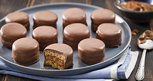

Alfajor
O doce mais tradicional da Argentina tem origem na cozinha árabe. O alfajor nasceu na Andaluzia, região sul da Espanha e seu nome vem de “al-hasu”, que em árabe, significa recheado. Originalmente produzido com amêndoas, mel e avelãs, chamou-se também alaju,e chegou às ruas espanholas como alfajor (leia-se: alfarror).
Sua receita milenar percorreu vários caminhos e hoje podem ser encontradas combinaçõesvariadas de recheios, cobertura e sabores, em países como Espanha, Argentina, Uruguai,Chile, Peru e outros países latino-americanos.
Os brasileiros passaram a conhecê-lo quando viajavam para os países vizinhos do Mercosul, especialmente Argentina e Uruguai, onde este produto é considerado unanimidade nacional.
No Brasil, especialmente nos estados do Rio Grande do Sul e Santa Catarina, o alfajorpassou a ser produzido, primeiramente em escala artesanal, influenciado pelo grande número de famílias de argentinos e uruguaios que passaram a viver nesta região

Ingredientes:
200 g de chocolate meio amargo picado
1 xícara (chá) de manteiga em temperatura ambiente
1 xícara (chá) de açúcar
2 colheres (chá) de essência de baunilha
1 colher (sopa) de raspas de limão
1 colher (sopa) de conhaque
2 xícaras (chá) de farinha de trigo
2 xícaras (chá) de maizena
1 colher (sopa) de fermento em pó
6 colheres (sopa) de leite gelado
300 g de doce de leite cremoso
2 colheres (chá) de essência de baunilha
MODO DE PREPARO:
Ligue o forno a temperatura média.Misture em uma tigela a manteiga (reserve 1 colher (sopa)), o açúcar, as gemas, a baunilha, as raspas de limão e o conhaque até ficar cremoso e homogêneo.
Junte, aos poucos, a farinha peneirada com a maisena e o fermento, simultaneamente com o leite.
Se necessário, junte mais farinha.Transfira para uma superfície lisa e sove até desgrudar das mãos.
Deixe descansar por 15 minutos.
Abra a massa numa superfície enfarinhada até obter 1 cm de altura.Corte em 32 círculos de 5 cm de diâmetro, e coloque-os em assadeiras, untadas com a manteiga reservada.
Leve ao forno por 15 minutos, ou até dourar.
Retire do forno, desenforme e deixe esfriar.
Una os círculos com o doce de leite misturado com a baunilha, formando os alfajores.
Cobertura:
Derreta o chocolate em banho-maria e banhe os alfajores, um a um.
Coloque-os numa fôrma forrada com papel-alumínio e leve à geladeira por 20 minutos, ou até ficar firme.